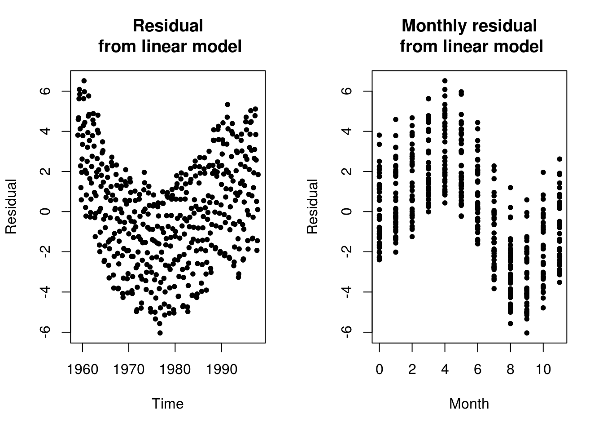
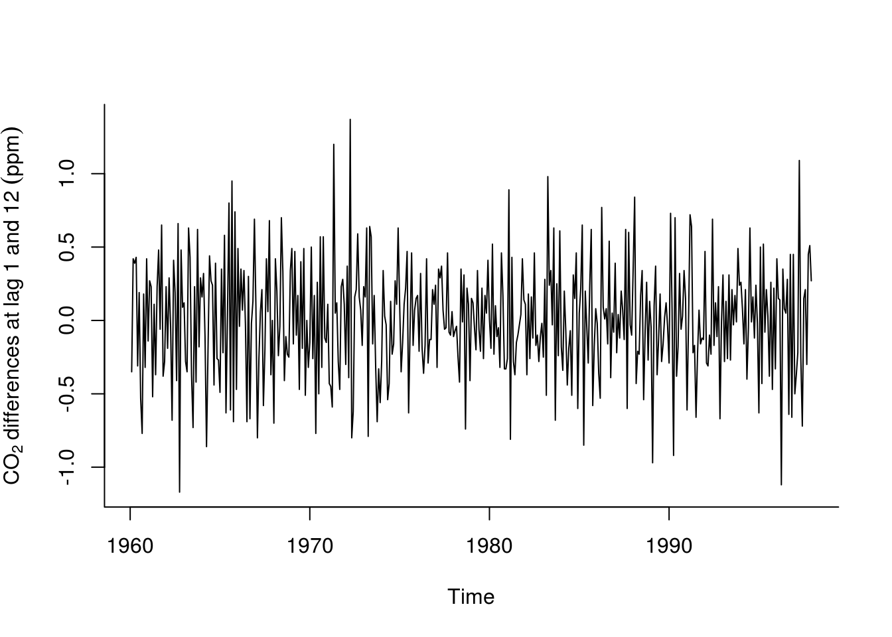
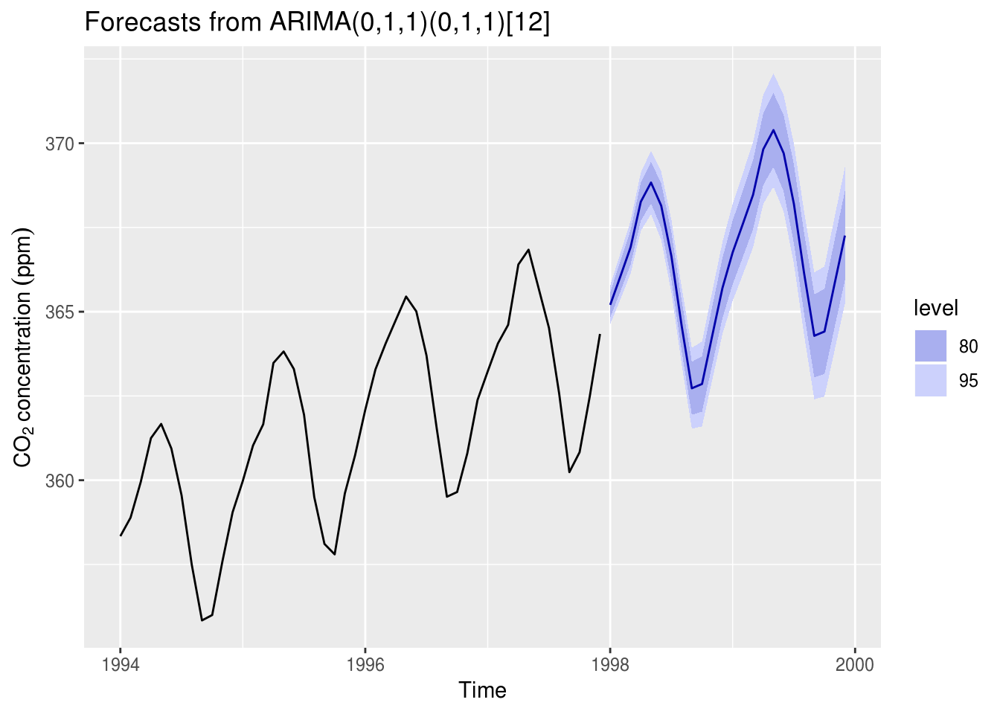
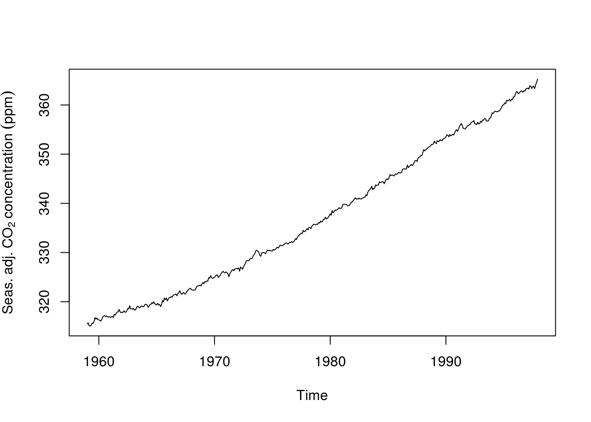
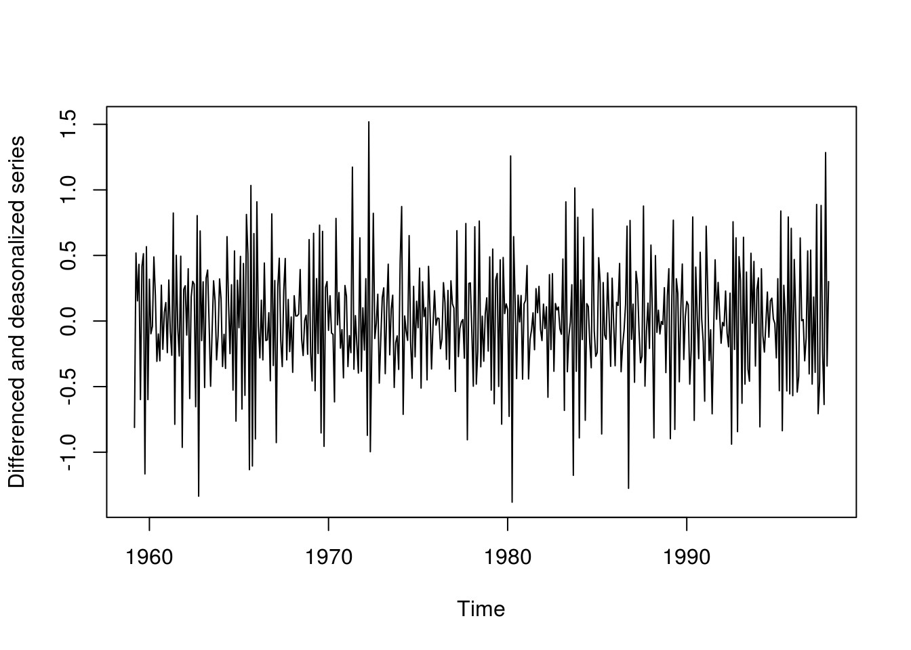
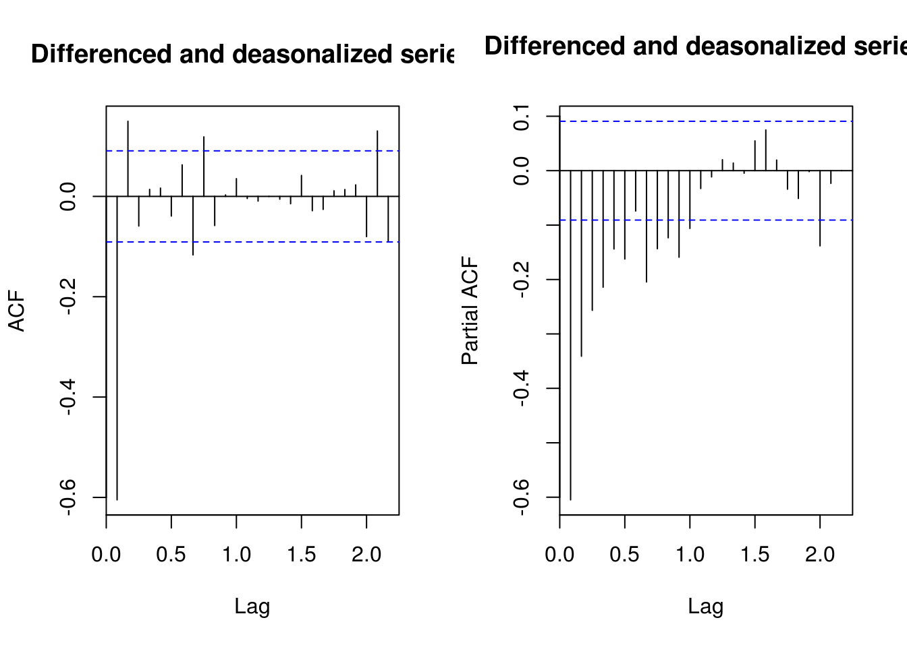
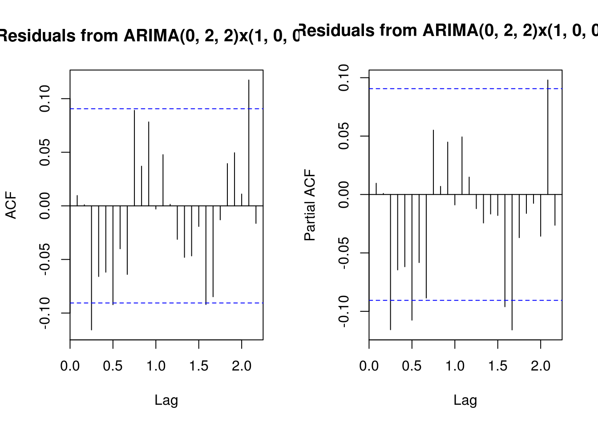
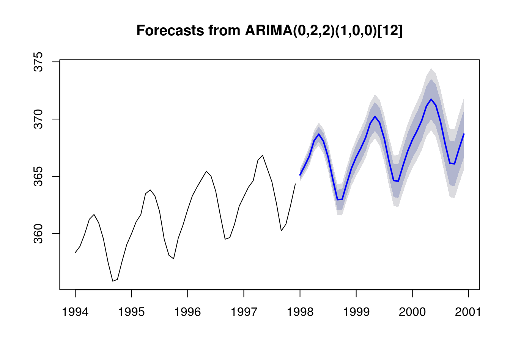

3.2 An aside on models with regressors (optional)
Rather than performing your inference in multiple steps (detrending, then modelling the residuals), it is sometimes better to do all at once to correctly characterize the uncertainty arising from estimation. You can do so in a regression context by using a generalized least squares specification.
That is, we can consider fitting a model of the form \[\boldsymbol{y} = \mathbf{X}\boldsymbol{\beta}+\boldsymbol{\varepsilon}\] where \(\mathbf{X}\) is assumed to be non-stochastic, \(\mathsf{E}(\boldsymbol{\varepsilon}) = 0\) and \(\mathsf{Var}(\boldsymbol{\varepsilon}) = \boldsymbol{\Omega}\).
The GLS estimator that solves the minimization problem for correlated errors is
\[\boldsymbol{\hat{\beta}} = (\mathbf{X}^\top\boldsymbol{\Omega}^{-1}\mathbf{X})^{-1}\mathbf{X}^\top\boldsymbol{\Omega}^{-1}\boldsymbol{y}\]
and one can easily show it is best linear unbiased predictor (BLUE). The function gls in R has an argument correlation. One can specify corARMA(p, q) to provide the structure of the errors, but the fitting procedure is time-consuming and may fail to converge.
The arima (and variants thereof) function allows one to specify a model whose errors follow an ARMA model, viz.
\[ y_t = \mathbf{X}_t\boldsymbol{\beta} + \eta_t, \qquad \eta_t = \sum_{j = 1}^p\phi_j\eta_{t-j} + \sum_{k = 1}^q \theta_k\varepsilon_{t-k} + \varepsilon_t.\]
This is a somewhat modern variant of the Cochran–Orcutt procedure.
A matrix of external regressors can be supplied to any of arima functions via the argument xreg. There are subtleties associated with fitting time series models with regressors. See notably The ARIMAX model muddle by Rob Hyndman.
3.2.1 Mauna Loa CO2 dataset
We revisit the Mauna Loa CO2 example. While one can see very clear trend and seasonality. One could in principle add a linear trend to the model. Detrending is difficult because there is clear evidence that the growth is exponential and not linear. One could nevertheless fit a model to the deterministic part and then model residuals. This would likely require removing the components \((1-B)(1-B^{12})\) from the model, but may create artifacts that will be due to model misspecification. The SARIMA prediction seemingly works because of the combination of the seasonal unit root and the unit root (note however how the observed pattern from the last cycle gets reproduced).
data("co2", package = "datasets")
# Look at the deterministic structure of the model, ignoring the time
# component
n <- length(co2)
month <- as.vector(round((time(co2) * 12)%%12))
par(mfrow = c(1, 2))
# Residual from simple linear model
plot(c(time(co2)), resid(linmod <- lm(co2 ~ c(1:n))), ylab = "Residual", main = "Residual\n from linear model",
xlab = "Time", pch = 20)
plot(month, resid(linmod), ylab = "Residual", xlab = "Month", main = "Monthly residual\n from linear model",
pch = 20)
par(mfrow = c(1, 1))
plot(diff(diff(co2, lag = 12)), ylab = expression(CO[2] ~ differences ~ at ~
lag ~ 1 ~ and ~ 12 ~ (ppm)), bty = "l")
# Forecasting methods illustrated Commented methods are the default
library(forecast)
# Selected model - see data analysis handout by Prof. Davison
tsmod_co2 <- Arima(co2, order = c(0, 1, 1), seasonal = c(0, 1, 1)) #Fit an ARIMA model
# tsmod_co2 <- arima(co2, order = c(0, 1, 1), seasonal = list(order = c(0,
# 1, 1), period = 12))
for_std <- forecast(tsmod_co2) #returns matrix with forecast, 80 and 95% pointwise confidence intervals
# for_std <- predict(tsmod_co2, n.ahead = 24) # To get equivalent output to
# that of the forecast package, can derive confint manually viz
# cbind(for_std$pred, for_std$pred-qnorm(0.975)*for_std$se,
# for_std$pred+qnorm(0.975)*for_std$se)
yl <- expression(CO[2] ~ concentration ~ (ppm)) #label for plot
autoplot(for_std, include = 48, ylab = yl)
# ggplot2 plot, focusing on last four years for readability + two predicted
# plot(for_std, include = 48, ylab = yl) #regular R plotContrast this prediction with one that includes a drift linear drift, but without the unit root (set include.drift = TRUE). You can also try fitting a deterministic seasonal variation, removing the latter, fitting a SARIMA model to the deseasonalized series and including back the cyclic seasonal component in the forecast. Here is an example of how to proceed:
# Fit a seasonal + trend decomposition to data, with robust LOESS
stl_co2 <- stl(co2, s.window = "periodic", t.window = 99, robust = TRUE)
# Extract and plot the seasonally adjusted component
deseas_co2 <- seasadj(stl_co2)
plot(deseas_co2, ylab = expression(Seas. ~ adj. ~ CO[2] ~ concentration ~ (ppm)))
# Fit a seasonal model, with double differencing to remove trend and level
plot(deseas_diff_co2 <- diff(diff(deseas_co2)), ylab = "Differenced and deasonalized series")
# Box-Jenkins model selection
par(mfrow = c(1, 2))
TSA::acf(deseas_diff_co2, main = "Differenced and deasonalized series")
pacf(deseas_diff_co2, main = "Differenced and deasonalized series")
# Trial and error Suggests an MA(2) + autoregressive part (seasonal) b/c not
# purely deterministic!
deseas_co2_arima <- Arima(deseas_co2, order = c(0, 2, 2), seasonal = c(1, 0,
0))
# (Partial) correlogram of residuals?
main <- "Residuals from ARIMA(0, 2, 2)x(1, 0, 0)[12]"
TSA::acf(resid(deseas_co2_arima), main = main)
pacf(resid(deseas_co2_arima), main = main)
# Omitted step: Ljung-Box test for ARIMA residuals Forecasting three years
# ahead using the deseasonalized series
for_stl <- forecast(deseas_co2_arima, h = 36)
# Adding back the seasonal component
for_stl$mean <- for_stl$mean + seasonal(stl_co2)[1:36]
for_stl$lower <- for_stl$lower + seasonal(stl_co2)[1:36]
for_stl$upper <- for_stl$upper + seasonal(stl_co2)[1:36]
# Substituting the deseasonalized series by the original series
for_stl$x <- co2
# Plot the forecast with four previous observed year as guideline
par(mfrow = c(1, 1))
plot(for_stl, include = 48)
In practice, it seems clear that the uncertainty is underestimated. We did look at multiple models (or would normally have) before settling on this particular SARIMA model. The parameter uncertainty also needs to be considered, as well as prior data transformation. In the sequel, we provide a brief overview of boostrap methods for time series.
3.2.2 Exercice 1: Nottingham average monthly temperature and Hong Kong monthly exports
- Fit a SARIMA model on the Nottingham average monthly temperature dataset
nottemand obtain predictions for the three subsequent years. - Fit a SARIMA model to the latter, this time including seasonal dummies as regressors
- Compare the forecasts from both models
- Import the dataset
hk_trade_m.csvusing the commandHKTrade<-read.csv("http://sma.epfl.ch/~lbelzile/math342/hk_trade_m.csv", header = FALSE)and try fitting a suitable SARIMA model to the exports (on the log scale). Contrast the forecasts for different models with their complexity as described by the number of components. What do you notice? Plot the forecasted values on the original scale of the data after back-transforming.